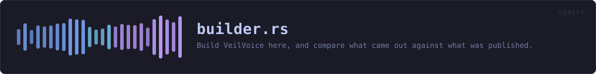

crates/veilvoice-verify/src/builder.rs
veilvoice-verify · 1148 lines · read the source here · or on GitHub
Build VeilVoice here, and compare what came out against what was published.
The question this answers, and the one it does not
veilvoice-verify file answers is this download the one that was published. This answers the harder one: is the published build the one this source produces. A signature says who made a file. Only a build says what the file is made of.
It cannot answer it for anybody else. A build here proves something about this platform and this machine, and that is exactly how a reproducible-build claim is normally checked -- three machines give you three platforms verified. It is a real answer rather than a pretended one.
"Builds for every operating system" means "builds for the one it is on"
A build needs that platform's headers and linker. veilvoice-cli cannot be compiled for Linux from Windows because alsa-sys needs ALSA's headers, and a macOS build needs Apple's SDK, which Apple's licence does not allow to be redistributed or run elsewhere. Every other crate cross-checks cleanly with --target, and that is a type check, not a binary anybody should install.
So this builds VeilVoice for the machine it is on, and compares that against the published build for that platform.
A difference is a finding, not an accusation
Reproducibility is a property of the release, not of the checker. If a build here and the published build differ, that is something to look into and publish -- and this prints both hashes and the names of the differing files rather than a verdict, because "not reproducible" has several causes and most of them are boring: a different compiler version, a path baked into a panic message, a timestamp. It exits Status::NotReproducible, which is deliberately not the status that means tampering.
In plain words
Anyone can sign a file. A signature tells you who put their name to something; it does not tell you that the thing they signed was built from the source code they published. This builds VeilVoice on your own computer, from the source in front of you, and checks whether what comes out is byte-for-byte the same as what was released.
If it is, you know the released program is the source code -- not because anybody said so, but because you produced the same thing yourself.
If it is not, that is worth knowing and worth reporting, and it is usually something dull rather than something sinister. So this shows you both answers and which files differed, and leaves the conclusion to you.
WHAT THIS FILE CONTAINS
1148 lines defining 20 functions (16 public), 3 types and 3 constants. Everything below is read out of the source, so it cannot disagree with the code.
The types it owns.
struct Builtline 73 · What a build produced.struct Environmentline 250 · Everything that would otherwise differ between two builds of one source.enum Comparedline 526 · How a built file compared against the published list.
What happens when it runs. These are the ways in: public, and nothing else in this file calls them, so they are what an outside caller reaches first.
looks_like_the_sourceline 88 · Whether the source tree this is pointed at is really one.pinned_toolchainline 120 · The compiler version the source tree pins itself to.Environment::describeline 272 · The settings, for printing before a build.environmentline 366 · The environment the release is built in, for this tree on this machine.
reachesas_the_compiler_sees_it,cargo_home,commit_date,host_triple,repro_link,target_directory,json_string_fieldbuildline 417 · Run the release build.
reachestarget_directory,json_string_fieldhash_what_was_builtline 489 · Hash every binary a release ships, from a directory a build left behind.
reacheswith_platform_extensioncompareline 559 · Compare a build against a hash list.report_dependenciesline 597 · Report what a dependency check found.installline 640 · Run one install command, having been told yes.agreedline 666 · Ask, and take only an unambiguous yes.status_forline 683 · The status a comparison should exit with.
reachesall_matched
WHAT CALLS WHAT
The functions this file defines, and the calls between them. An edge means the callee's name appears, called, inside the caller's body. This is a syntactic reading, not a type-resolved one.
The same graph as Mermaid source
%%{init: {"theme":"base","themeVariables":{"background":"#1a1b26","primaryColor":"#1f2335","primaryTextColor":"#c0caf5","primaryBorderColor":"#7aa2f7","secondaryColor":"#16161e","tertiaryColor":"#16161e","lineColor":"#737aa2","textColor":"#c0caf5","mainBkg":"#1f2335","nodeBorder":"#7aa2f7","clusterBkg":"#16161e","clusterBorder":"#2f3549","fontFamily":"ui-monospace, SFMono-Regular, Consolas, monospace","fontSize":"14px"}}}%%
flowchart TD
n_looks_like_the_source(["looks_like_the_source<br/>line 88"])
n_pinned_toolchain(["pinned_toolchain<br/>line 120"])
n_host_triple["host_triple<br/>line 133"]
n_target_directory["target_directory<br/>line 162"]
n_json_string_field["json_string_field<br/>line 193"]
n_describe(["Environment::describe<br/>line 272"])
n_repro_link["repro_link<br/>line 292"]
n_cargo_home["cargo_home<br/>line 307"]
n_commit_date["commit_date<br/>line 316"]
n_as_the_compiler_sees_it["as_the_compiler_sees_it<br/>line 341"]
n_environment(["environment<br/>line 366"])
n_build(["build<br/>line 417"])
n_hash_what_was_built(["hash_what_was_built<br/>line 489"])
n_with_platform_extension["with_platform_extension<br/>line 516"]
n_compare(["compare<br/>line 559"])
n_all_matched["all_matched<br/>line 585"]
n_report_dependencies(["report_dependencies<br/>line 597"])
n_install(["install<br/>line 640"])
n_agreed(["agreed<br/>line 666"])
n_status_for(["status_for<br/>line 683"])
n_build --> n_target_directory
n_environment --> n_as_the_compiler_sees_it
n_environment --> n_cargo_home
n_environment --> n_commit_date
n_environment --> n_host_triple
n_environment --> n_repro_link
n_environment --> n_target_directory
n_hash_what_was_built --> n_with_platform_extension
n_status_for --> n_all_matched
n_target_directory --> n_json_string_field
click n_looks_like_the_source href "https://github.com/tilas01/veilvoice/blob/main/crates/veilvoice-verify/src/builder.rs#L88" "open the source"
click n_pinned_toolchain href "https://github.com/tilas01/veilvoice/blob/main/crates/veilvoice-verify/src/builder.rs#L120" "open the source"
click n_host_triple href "https://github.com/tilas01/veilvoice/blob/main/crates/veilvoice-verify/src/builder.rs#L133" "open the source"
click n_target_directory href "https://github.com/tilas01/veilvoice/blob/main/crates/veilvoice-verify/src/builder.rs#L162" "open the source"
click n_json_string_field href "https://github.com/tilas01/veilvoice/blob/main/crates/veilvoice-verify/src/builder.rs#L193" "open the source"
click n_describe href "https://github.com/tilas01/veilvoice/blob/main/crates/veilvoice-verify/src/builder.rs#L272" "open the source"
click n_repro_link href "https://github.com/tilas01/veilvoice/blob/main/crates/veilvoice-verify/src/builder.rs#L292" "open the source"
click n_cargo_home href "https://github.com/tilas01/veilvoice/blob/main/crates/veilvoice-verify/src/builder.rs#L307" "open the source"
click n_commit_date href "https://github.com/tilas01/veilvoice/blob/main/crates/veilvoice-verify/src/builder.rs#L316" "open the source"
click n_as_the_compiler_sees_it href "https://github.com/tilas01/veilvoice/blob/main/crates/veilvoice-verify/src/builder.rs#L341" "open the source"
click n_environment href "https://github.com/tilas01/veilvoice/blob/main/crates/veilvoice-verify/src/builder.rs#L366" "open the source"
click n_build href "https://github.com/tilas01/veilvoice/blob/main/crates/veilvoice-verify/src/builder.rs#L417" "open the source"
click n_hash_what_was_built href "https://github.com/tilas01/veilvoice/blob/main/crates/veilvoice-verify/src/builder.rs#L489" "open the source"
click n_with_platform_extension href "https://github.com/tilas01/veilvoice/blob/main/crates/veilvoice-verify/src/builder.rs#L516" "open the source"
click n_compare href "https://github.com/tilas01/veilvoice/blob/main/crates/veilvoice-verify/src/builder.rs#L559" "open the source"
click n_all_matched href "https://github.com/tilas01/veilvoice/blob/main/crates/veilvoice-verify/src/builder.rs#L585" "open the source"
click n_report_dependencies href "https://github.com/tilas01/veilvoice/blob/main/crates/veilvoice-verify/src/builder.rs#L597" "open the source"
click n_install href "https://github.com/tilas01/veilvoice/blob/main/crates/veilvoice-verify/src/builder.rs#L640" "open the source"
click n_agreed href "https://github.com/tilas01/veilvoice/blob/main/crates/veilvoice-verify/src/builder.rs#L666" "open the source"
click n_status_for href "https://github.com/tilas01/veilvoice/blob/main/crates/veilvoice-verify/src/builder.rs#L683" "open the source"
classDef entry fill:#1f2335,stroke:#7aa2f7,color:#c0caf5
class n_looks_like_the_source,n_pinned_toolchain,n_describe,n_environment,n_build,n_hash_what_was_built,n_compare,n_report_dependencies,n_install,n_agreed,n_status_for entry
classDef api fill:#1f2335,stroke:#7dcfff,color:#c0caf5
class n_host_triple,n_target_directory,n_repro_link,n_with_platform_extension,n_all_matched api
classDef helper fill:#1f2335,stroke:#bb9af7,color:#c0caf5
class n_json_string_field,n_cargo_home,n_commit_date,n_as_the_compiler_sees_it helperThis site loads no third-party script, so it cannot run Mermaid; the diagram above is the same nodes and edges drawn by the generator instead. GitHub renders the source below directly.
ITEMS
| Item | Line | Documentation |
|---|---|---|
RELEASE_ARGS pub const | 63 | The profile a release is built with. |
RELEASE_DIR pub const | 66 | Where a release build leaves its binaries, relative to the target directory. |
SHIPPED pub const | 69 | The binaries a release publishes, without any platform extension. |
Built pub struct | 73 | What a build produced. |
looks_like_the_source pub fn | 88 | Whether the source tree this is pointed at is really one. |
pinned_toolchain pub fn | 120 | The compiler version the source tree pins itself to. |
host_triple pub fn | 133 | The platform triple this build is for, as rustc names it. |
target_directory pub fn | 162 | Where this workspace's build output actually goes. |
json_string_field fn | 193 | One top-level string out of cargo's JSON, without a JSON parser. |
Environment pub struct | 250 | Everything that would otherwise differ between two builds of one source. |
Environment::describe pub fn | 272 | The settings, for printing before a build. |
repro_link pub fn | 292 | Flags that make this platform's linker deterministic. |
cargo_home fn | 307 | Where cargo keeps downloaded crates, whose paths are also baked in. |
commit_date fn | 316 | The date of the commit being built, as seconds since the epoch. |
as_the_compiler_sees_it fn | 341 | A path as the compiler will see it, for the remapping to match. |
environment pub fn | 366 | The environment the release is built in, for this tree on this machine. |
build pub fn | 417 | Run the release build. |
hash_what_was_built pub fn | 489 | Hash every binary a release ships, from a directory a build left behind. |
with_platform_extension pub fn | 516 | A binary's name on this platform. |
Compared pub enum | 526 | How a built file compared against the published list. |
compare pub fn | 559 | Compare a build against a hash list. |
all_matched pub fn | 585 | Whether every file that could be compared matched. |
report_dependencies pub fn | 597 | Report what a dependency check found. |
install pub fn | 640 | Run one install command, having been told yes. |
agreed pub fn | 666 | Ask, and take only an unambiguous yes. |
status_for pub fn | 683 | The status a comparison should exit with. |